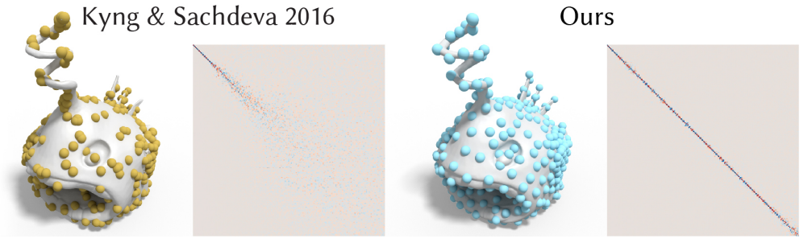

Spectral Geometry Processing
In these notes, we will explore the intersection of spectral graph theory and geometry processing. Beginning with some background, we will discuss the laplacian and its applications to geometry processing and cover recent research on developing efficient algorithms for the application of spectral techniques to geometry processing.
Background
Geometry Processing
Three-dimensional geometric models are the base data representation for computer graphics, computer aided design, visualization, multimedia, and many other related fields. The advent of low-cost scanning technologies and accessible fabrication methods have brought these models to the forefront as an interface between the digital world on our computer and the physical 3D world around us.
Geometry processing, or the computerized creation, manipulation, editing and analysis of 3D geometry has therefore become an important field for both computer scientists and end users from diverse backgrounds. Having briefly motivated geometry processing, let us now cover some technical definitions to help us discuss research in this field.
What is a mesh?
To discuss problems in geometry processing, we must first define a representation for 3D geometric models. While there exist many different representations, each with their own advantages and disadvantages; a popular representation, and one that is closest to the concepts discussed in the course is that of a discrete mesh \(M\).
\(M = (V, E, F)\) is defined by three elements, geometric vertices \(V\), edges \(E\) connecting vertices and polygonal faces \(F\) bounded by edges. From the graph theoretic perspective, the vertices and edges of \(M\) convey the same information as in a graph; in particular \(M_G = (V,E)\) is a perfectly valid graph defined by the connectivity of \(M\). However, \(M\) further has two additional elements.
Geometric Embedding: Each vertex in \(V\) has a geometric position \((x,y,z)\) attached to it, that defines its location in space. This imbues every mesh \(M\) with a geometric embedding in 3D space, unlike a typical graph.
Surface Topology: The faces of \(M\) constitute 2D topological elements that are not present in graphs we have studied. Faces allow a mesh to represent surfaces in 3D space using discrete elements.
Mesh Laplacian
Much like the graph laplacian, we can define a mesh laplacian using the connectivity of a mesh. As we discussed earlier, a graph \(M_G = (V,E)\) could be defined based on \(M\)’s connectivity.
One way to define the mesh laplacian for \(M\) is to simply take the uniform graph laplacian of \(M_G\), i.e
\[L = D - A\]
As in the case of voltages in electrical networks, the mesh laplacian is particularly useful when considered as an operator on a quantity defined on the vertices. In our context, we are interested in the laplacian of the geometric positions.
Let’s say \(M\) has \(n\) vertices, each denoted with coordinates \(v_i = (x_i, y_i, z_i)\). Now lets define \(X\) , \(Y\) and \(Z\) as column vectors containing all \(x_i\)’s , \(y_i\)’s and \(z_i\)’s respectively. The elements of \(LX\) are:
\[ \begin{align} LX_i &= d_i x_i - \sum\limits_{j \in N(i)}x_j \\ &= d_i (x_i - \frac{1}{d_i}\sum\limits_{j \in N(i)}x_j) \end{align} \]
where \(N(i)\) denotes the neighbors of vertex \(i\) in \(M_G\).
The term \((x_i - \frac{1}{d_i}\sum\limits_{j \in N(i)}x_j)\) is particularly interesting as it represents the \(x\) co-ordinate of the vertex relative to its neighbors. We thus define the differential co-ordinates \(\delta\) (Sorkine 2005) of the mesh as follows:
\[\delta_i = (\delta_i^{(x)},\delta_i^{(y)},\delta_i^{(z)}) = v_i - \frac{1}{d_i}\sum\limits_{j \in N(i)}v_j\]
Thus, \(LX = D\delta^{(x)}\), \(LY = D\delta^{(y)}\) and \(LZ = D\delta^{(z)}\).
Let us now gain some intuition on the mesh laplacian and the differential co-ordinates by considering it from the two perspectives of differential geometry and signal processing.
Differential Geometric Perspective
The \(\delta\) co-ordinates defined above, can be represented as
\[ \delta_i = \frac{1}{d_i} \sum\limits_{j \in N(i)} (v_i - v_j) \]
The sum above is a discretization of the following curvilinear integral:
\[ \frac{1}{|\gamma|} \int_{v \in \gamma} (v_i - v) dl(v) \]
where \(\gamma\) is a closed curve around \(v_i\) and \(|\gamma|\) is the length of the curve. We know from differential geometry, that taking \(\lim_{|\gamma| \to 0}\) on the above expression returns a vector with the magnitude of the mean curvature and the direction of the surface normal at \(v_i\).
The direction of the differential coordinate vector therefore approximates the local normal direction and the magnitude approximates a quantity proportional to the local mean curvature. Intuitively, this means that the \(\delta\) co-ordinates capture the local shape characteristics of the surface mesh \(M\).
Signal Processing Perspective
An alternative perspective arises from taking the spectral viewpoint (Lévy and Zhang 2010). We know that \(L\) is symmetric positive semi-definite and thus has orthonormal eigenvectors
\[ E = (e_1, e_2, ...,e_n)\]
with eigenvalues \(\lambda_i\) such that
\[ 0 = \lambda_1 < \lambda_2 \leq ..\leq \lambda_n \]
Clearly, the eigenvectors \(E\) form a basis which can represent the mesh vertex coordinates \(X\) , \(Y\) and \(Z\).
\[ X = \alpha_1e_1 + \alpha_2e_2 + ... + \alpha_ne_n \]
We can think of the eigenvectors and vertex coordinates as scalar functions or ‘signals’ defined on the mesh \(M\), since in each case we have a single scalar value corresponding to each vertex in \(M\).
Now, let’s see what these signals typically look like on this simple 2D example of a seahorse.
The earlier eigenvectors, corresponding to smaller eigenvalues, are smooth, slowly varying functions. For instance, the first eigenvector is the “smoothest” as it is constant and does not vary at all. Later eigenvectors with larger eigenvalues behave like high frequency functions with rapid oscillations.
In fact, this behaviouar is general and can be corroborated by the fact that the laplacian eigenbasis has been shown to be an extension of the discrete cosine basis to irregular domains (Taubin 1995), with the eigenvalues considered as mesh frequencies.
With this intuition, let us now explore what this basis captures in a shape. To do this, we represent the geometry of the shape using the eigenbasis, while suppressing terms corresponding to eigenvectors with increasingly higher eigenvalues (from left to right in the figure below). This helps us see the effect of different eigenvectors in the basis in isolation.
We see that the coefficients and eigenvectors corresponding to lower eigenvalues capture global characteristics of the shape; and conversely those corresponding to higher eigenvalues capture local detail. Akin to a fourier basis for images, the laplacian eigenbasis therefore forms a meaningful compact representation for geometry.
Applications
Having formed some intuition for the mesh laplacian, let us now discuss its applications to geometry processing.
Laplacian Mesh Editing
The \(\delta\) co-ordinates’ ability to capture local shape characteristics has been used for a variety of applications in mesh reconstruction and editing. The underlying idea is to combine known laplacian coordinates with a set of positional constraints in an overconstrained linear system. In particular, such applications typically compute a least-squares solution to the following overconstrained linear system for each of the coordinates \(X\) , \(Y\) and \(Z\) :
\[ \begin{bmatrix} L \\ I_K \end{bmatrix} X = \begin{bmatrix} D\delta^{(x)} \\ C_k^{(x)} \end{bmatrix} \]
Here \(L\) is the laplacian, as usual, and \(I_k\) and \(C_k\) are matrices that represent a set of positional constraints. For instance, if we want to constrain \(x_j\) to be \(c_j\), \(I_k\) will have a row that has a 1 for \(x_j\) and 0 for everything else, and the corresponding row in \(C_k^{(x)}\) will have value \(c_j\); thus adding the positional constraint to the linear system. The least-squares solution \(\tilde{X}\) is of the form:
\[ \tilde{X} = \arg\min_X (||LX - \delta^{(x)}||^2 + \sum\limits_{i=1}^{k}|X_k-C_k|^2) \]
The intuition behind this system is that the \(\delta\) coordinates help us preserve relative shape characteristics, and the constraints specify the absolute geometric positions needed to reconstruct the mesh geometry. Based on the constraints and how they are weighted, we can use the same system for reconstructing a mesh from a sparse set of input points (Sorkine and Cohen-Or 2004) (for e.g, by setting \(\delta\) to 0 in mesh portions where we don’t have prior information to require a generally smooth surface at that location).
Or alternatively to edit a mesh while retaining its local characteristics by specifying positional constraints that correspond to the original and edited mesh positions (Sorkine 2005).
Spectral Mesh Compression
As we discussed earlier, the laplacian eigenbasis forms a meaningful compact representation for geometry. Representing mesh coordinates in the laplacian eigenbasis as before we have:
\[ X = \alpha_1e_1 + \alpha_2e_2 + ... + \alpha_ne_n \]
Now, much like image compression techniques that use the fourier basis, we can perform a low-pass filtering on the mesh geometry to get smoother versions of the surface mesh. In particular, we simply suppress terms corresponding to eigenvectors with eigenvalues above a threshold, and take only the contributions of the first \(k\) eigenvectors, i.e
\[ X = \sum\limits_{i=1}^k\alpha_ie_i \text{ where } k \leq n \]
This helps us perform a controlled mesh smoothing and compression as highlighted below (Sorkine 2005).
Alternatively, this compact basis has been used for a variety of different applications like shape matching, where maps are computed between basis vectors for two different shapes (Ovsjanikov et al. 2012).
Efficient spectral mesh processing
The mesh laplacian is a popular tool for geometry processing with a variety of different applications. However, an important challenge in the use of spectral methods for geometry processing is the size of the meshes in real-world applications. In particular, meshes can have vertices in the order of hundreds of thousands, and the downstream processing of the laplacian becomes extremely expensive for such models. For instance, even if we can compute the laplacian eigenbasis, tasks like solving linear systems, computing maps between different bases for shape correspondence and so on can become extremely expensive, especially as the complexity of operations in the downstream application pipeline increase.
As a result, researches have been trying to reduce the cost of such computations by attempting to coarsen the matrices we are working with. In particular, prior work has tried to approach this problem in two ways:
Coarsening the linear operator \(L\)
Coarsening the mesh \(M\).
While both approaches have the potential to reduce the problem domain and thus allow for efficient computation, let us discuss issues with the current state of the art.
Spectral Coarsening of Linear Operators
Such approaches focus on coarsening the laplacian matrix \(L\) such that its spectral properties are preserved. The coarsened operator is then used for downstream analysis, and the results are transferred back to the original mesh by keeping track of the coarsening process.
While both algebraic (Kyng and Sachdeva 2016) and geometric (Liu, Jacobson, and Ovsjanikov 2019) approaches have been proposed for this problem, such approaches suffer from one key limitation: the lack of a corresponding coarse mesh.
Without a mesh that corresponds to the coarsened operator, the downstream applications of the coarsening are severely limited to those that can be performed without the presence of corresponding geometry, or more specifically those that only require the operator. We saw earlier that most of our applications used both the laplacian and corresponding precise vertex positions.
To further illustrate the severity of the limitation, let us see vertices of the coarsened graphs returned by such methods. The figure is a comparison between an algebraic and geometric method for coarsening, and while the geometric approach captures the surface better, it still does not have access to a mesh.

Given the sparsity of the vertices and fixed nature of the underlying coarsened graph, it is difficult to construct a triangle mesh that represents the original geometry in this setting.
Geometric Mesh Simplification
This limitation led researchers to simplify the mesh instead. Mesh simplification is usually performed via a series of edge collapses on a mesh (Garland and Heckbert 1997). This allows techniques to both be careful about the geometric deterioration of the mesh and retain the desired triangular nature of the mesh faces.
The edge collapses are ordered based on a greedy approach that aims to minimize the geometric change as a result of the collapse.
| Algorithm: Progressive Mesh Simplification |
|---|
Input: Mesh \(M = (V, F)\), target size \(N\), error metric \(s : v \times v \to \mathbb R\) Output: Simplified mesh \(\tilde{M} = (\tilde{V}, \tilde{F})\) \(\tilde{V} = V\), \(\tilde{F} = F\), queue = {} for edge \(e \in M\):
while \(|\tilde{V}| > N\) and queue not empty:
for \(n\) in \(e\)’s neighbors do
|
However, simplification methods that only attempt to preserve the appearance of the mesh fail to preserve spectral properties. For instance, the figure below illustrates the eigenvectors of the laplacian on fine and coarse versions of a geometrically simplified lion mesh with the approach above.
We can see clear differences in the patterns induced by the later eigenvectors.
Spectral Mesh Simplification
Motivated by this problem, (Lescoat et al. 2020) proposed a method for spectral mesh simplification, i.e a geometric mesh simplification technique that successfully preserves laplacian eigenvectors.
The approach is based on two main ideas. First, they stay rooted in geometric simplification techniques, performing a greedy edge-by-edge simplification to compute a coarsened mesh as the output. Second, instead of standard geometric error metrics, the simplification is based on a novel formulation for the preservation of the laplacian eigenvectors.
Preserving Laplacian Eigenvectors
The preservation of the laplacian eigenvectors is formulated as the commutativity of the laplacian and the simplification. In particular, computing the laplacian on a mesh and then restricting it to the simplified mesh should equal computing the laplacian on the simplified mesh.
This formulation encourages the preservation of the laplacian eigenvector functions on the mesh geometry. In other words, by encouraging the laplacian and mesh simplification to commute, we are able to retain the relationship between the laplacian eigenvectors and the geometric positions of the mesh vertices across the simplification. Let us now describe this idea more formally.
Given an input mesh \(M = (V,F)\) and its laplacian as \(L \in \mathbb R ^{|V| \times |V|}\), we define the coarse mesh \(\tilde{M} = (\tilde{V}, \tilde{F})\) and its laplacian \(\tilde{L} \in \mathbb R ^{|\tilde{V} \times \tilde{V}|}\). We further define \(P \in \mathbb R^{|\tilde{V} \times |V|}\) as the fine-to-coarse restriction matrix that captures which vertices are collapsed on to each other.
Now, in general for a signal \(f \in \mathbb R^{|V|}\), we want
\[ \tilde{L}Pf = PLf \]
Given \(K\) such signals to preserve (in our case the eigenvectors of the laplacian), represented as a matrix \(F \in \mathbb R^{|V| \times K}\), we want to minimize an error \(E\) where
\[ E = ||\tilde{L}PF - PLF||^2 \]
where \(||X||^2 = tr(X^{\top}X)\).
This energy can also be represented as a per-vertex sum
\[ E = \sum\limits_vE_v \text{ where } E_v = ||\text{row}_v(\tilde{L}PF - PLF)||^2 \]
Algorithm
The key idea behind the spectral mesh simplification approach is to use the progressive mesh simplification algorithm we discussed above, but define the order of edge collapses based on the spectral error metric \(E\). Instead of minimizing only the geometric error across simplification, we now aim to preserve the first \(K\) eigenvectors of the laplacian.
As we have already discussed the overall mesh simplification algorithm, in this section we will focus on the cost function for each edge and the update step for it.
Let’s begin by defining the cost for each edge. Intuitively, the cost for an edge \(e\) is the change in the spectral error \(E\) after collapsing \(e\).
\[ \text{cost} (e) = E^{after} - E^{before} \]
Before we compute the cost, however, we must discuss how to compute the error \(E\) for a given mesh. \(E\) is based on four matrices \(F\),\(L\), \(\tilde{L}\) and \(P\). While \(L\) and \(\tilde{L}\) can easily be computed based on the current mesh, the matrix \(F\) is computed at the start via an eigen decomposition of the original laplacian matrix \(L\).
The matrix \(P\) is iteratively updated following each collapse. For instance, lets consider an edge collapse \(c_i\) for an edge \(e = (u,v)\). Each such collapse operation \(c_i\) has a restriction matrix \(Q_i\) associated with it which maps the edge vertices \(u\) and \(v\) to the remaining vertex after the collapse, let’s say \(v\). If we perform \(m\) such collapses, our fine-to-coarse restriction matrix \(P\) is simply defined as \(P = Q_1Q_2...Q_m\).
Now, let us discuss the steps to compute the cost. Considering the per vertex sum version of the energy \(E = \sum\limits_v E_v\), we note that the energy \(E_v\) changes only for the neighbors of \(u\) and \(v\) after a collapse. We can thus restrict our computation to the subset \(H = \{u,v\} \cup N(u,v)\); where \(N(u,v)\) consists of the neighbors of \(u\) and \(v\).
We can thus define the per-edge cost as
\[ \text{cost}(e) = \sum\limits_{w \in H} E_w^{after} - E_w^{before} \] Let’s say the optimal edge to collapse is some edge \(e\) with restriction matrix \(Q\). The terms \(F\) and \(P\) are updated as \(F \leftarrow QF\) , \(P \leftarrow QP\) and the queue priority is updated accordingly. We then continue on to the next edge to collapse and repeat until we have reached the desired level of simplification.
Results
This method was practically evaluated and found to successfully preserve eigenvectors a lot better than purely geometric simplification techniques. This is shown below:
We see that the patterns for higher eigenvalues are also preserved very well with this method. They further highlight the possibility of using their method for downstream applications like shape matching.
They numerically evaluate their method using a matrix \(C\), where
\[ C = \tilde{\phi}^{\top}P\phi \]
Where \(\tilde{\phi}\) represents the coarsened eigenvectors, \(\phi\) represents the original eigenvectors and \(P\) as usual is our restriction matrix. Intuitively, if the commutativity is perfect \(C\) will be a diagonal matrix. The distance from a fully diagonal matrix is evaluated using norms that consider off-diagonal terms. Using this metric they compare their method with different geometric simplification techniques.